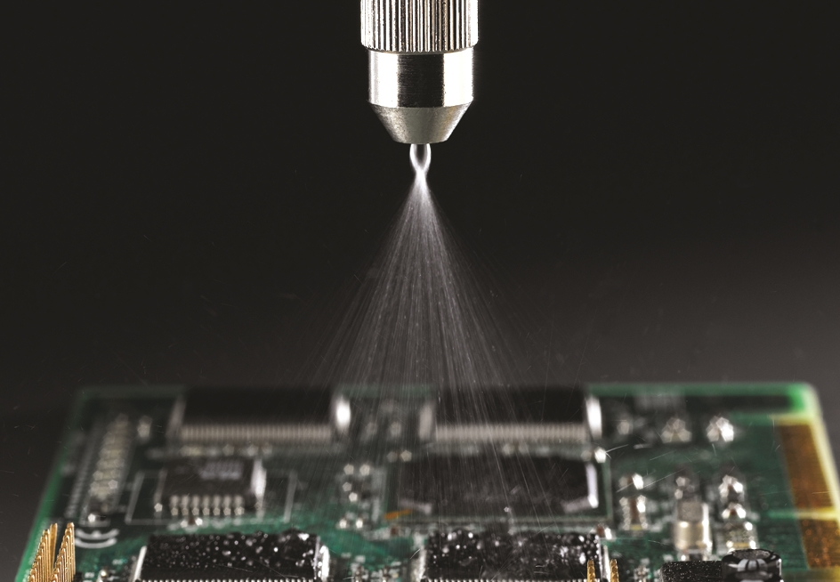
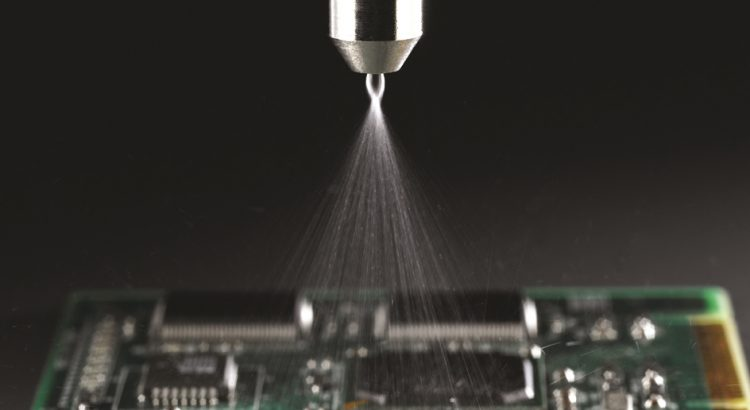
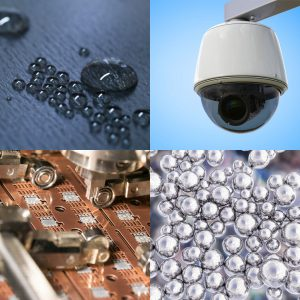

What is Conformal Coating and How to Applied It?

In this article we will discuss how conformal coatings are applied.Conformal coatings are nano-scale, polymer coatings that are applied to electronics for water protection via a variety of methods.They provide a number of protective properties such as protection against dust, moisture, chemicals, temperature extremes.These properties make conformal coatings a good water protection choice for a variety of applications throughout several industries.
Conformal coating is a generic name for several unique material variants.These variants each provide different coating, application, and protective properties.These variants of conformal coatings include acrylics, silicones, urethanes, fluoropolymers, parylene, in addition to other proprietary variants.
How are Conformal Coatings Applied?
There are a wide range of options for application options for conformal coatings.Examples include:
Selective Deposition Conformal Coating
For applications requiring water protection of only certain areas, manual or automated selective spray/deposition can be utilized.A wide variety of application and nozzle options can support nearly any application and water protective fluid regardless of viscosity.
Dip Applied Conformal Coating
Dip coating can be utilized to treat large batches of parts which require complete treatment of all surfaces.In some cases masking may be needed to prevent treatment of certain areas.Dip coating can be done manually or via automated process which controls insertion and extraction rates.Upside to dip coating is it is a simple process and allows for large volumes of quickly treated parts.Downside to dip coating is the need to properly maintain the bath concentration, mitigate evaporation dragout losses, in addition to replacement of contaminated bath materials.
Vacuum Deposited Conformal Coatings
Certain conformal coatings are applied via vacuum deposition processes.These are good options for small batches of parts requiring complete treatment.Parts requiring selective treatment can be masked prior to application.Upside to the vacuum deposition process for conformal coatings is repeatability, uniformity of coating thickness, and tight control over coating thickness.Downside to vacuum deposition options is extreme high cost of capital equipment and low throughput due to small batch sizes.
Spray Applied Conformal Coatings
Spray application is an effective and easy to implement coating process for application of conformal coatings to large surfaces or for high volumes of parts.Spray application is flexible as well as parts can be done in line or in a batch process.In addition spray processes can be done manually or automated.Downsides to application by spray are high usage rates due to overspray and also the necessity for masking in some scenarios.
Cure is Often Required!
In many cases conformal coatings despite the name do not actually conform to the surface!Materials low in viscosity will frequently slump off corners and edges of components resulting in poorly protected areas prone to failure.In addition most conformal coatings have the added complexity of requiring either vacuum deposition or a cumbersome thermal/UV cure process.There are options that address these serious flaws however!
What are Good Alternatives to Traditional Conformal Coatings?
There are commercially available protective coatings which actually conform to the surface coating all edges evenly and do not require the normal cure or vacuum processes associated with traditional conformal coatings.The first step to identifying the ideal alternative to your surface related protection issue is to reach out to a proven supplier of superior conformal coating alternative technologies.Aculon is a leading B2B manufacturer of easy to apply liquid phase conformal coating alternatives.Rather than providing generic off the shelf solutions, Aculon only works on new programs on a case by case basis optimizing a solution for your application that is truly a perfect fit.Together we can help you make winning water protected products.
[bsa_pro_ad_space id=4]
Share on Facebook Tweet Follow us
Posted On: 2021-01-15T00:00:00
Posted By: Joseph Denizen




Content Date: 2021-01-15
Download Date: 2021-07-09
Document ID: L0C04DWPQ